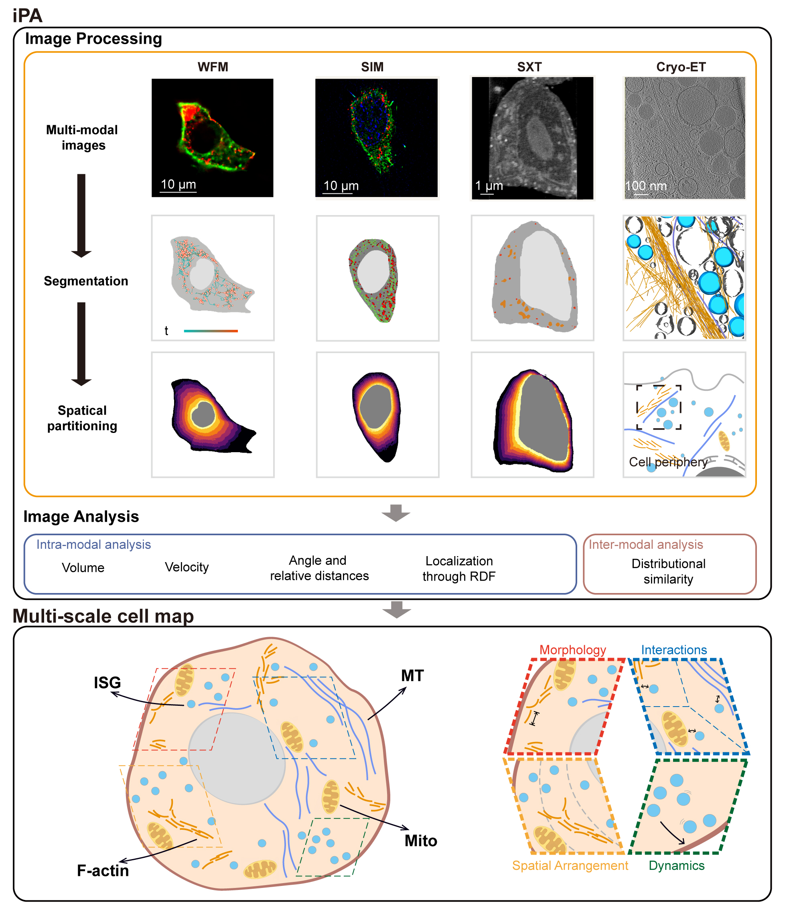

Integrated Processing and Analysis Toolkit (iPA)
{kind=link}

iPA is an integrated toolkit for processing and analysis of multimodal cell images. It provides a comprehensive workflow from raw image loading to advanced quantitative analysis, supporting multiple imaging modalities including cryo-electron tomography (cryo-ET), soft X-ray tomography (SXT), structured illumination microscopy (SIM), and widefield microscopy (WFM).
Key Features
Multi-Modal Support: Unified interface for cryo-ET, SXT, SIM, and WFM data
Automated Segmentation: Deep learning-based organelle segmentation with pre-trained models
Spatial Partitioning: Novel radial cytoplasmic partitioning algorithm for standardized spatial analysis
Quantitative Analysis: Four-dimensional analysis framework:
Morphology: Volume, surface area, length, shape descriptors
Spatial Arrangement: Radial distribution functions (RDF), docking analysis, clustering
Dynamics: Velocity analysis, motion patterns (future: MSD, trajectory reconstruction)
Interactions: 14 predefined organelle interaction types with distance and contact analysis
Self-Supervised Denoising: Noise2Void (N2V) and Noise2Noise (N2N) for improved image quality
Comprehensive Logging: Dual-output logging system (file + console) with Docker support
Supported Imaging Modalities
Modality |
Description |
Key Applications |
|---|---|---|
Cryo-ET |
Cryo-electron tomography High-resolution 3D structures |
Filament analysis, membrane segmentation, vesicle docking |
SXT |
Soft X-ray tomography Natural contrast, thick specimens |
Whole-cell segmentation, ISG analysis, radial partitioning |
SIM |
Structured illumination microscopy ~100 nm resolution |
Super-resolution ER, mito, ISG segmentation |
WFM |
Widefield microscopy Standard fluorescence imaging |
General organelle analysis, multi-channel imaging |
Quick Start
Basic Workflow Example:
from ipa.data_loader import UniversalDataLoader
from ipa.processing.segmentation import SXTCellSegmenter
from ipa.processing.partitioning import Partitioning
from ipa.analysis import calculate_rdf_from_xvg
# Step 1: Load data
volume = UniversalDataLoader.load_data('sxt_volume.mrc')
pm_mask = UniversalDataLoader.load_data('plasma_membrane.mrc')
ne_mask = UniversalDataLoader.load_data('nuclear_envelope.mrc')
# Step 2: Segment organelles
segmenter = SXTCellSegmenter(device='cuda')
segmenter.load_model()
results = segmenter.predict(volume)
# Step 3: Create radial partitions
partitioner = Partitioning(root_dir="results/", n_slices=8)
center, ne_edge, pm_edge = partitioner.extract_ne_pm_edges(pm_mask, ne_mask)
partition_mask = partitioner.create_nepm_radial_partitions(
ne_edge, pm_edge,
shape=volume.shape,
n_slices=8,
pm_mask=pm_mask,
ne_mask=ne_mask
)
# Step 4: Analyze spatial distribution
# (Calculate RDF for organelles in each partition)
rdf_results = calculate_rdf_from_xvg(...)
For more examples, see the examples section.
Documentation Structure
- Data Loading (Data Loader Module)
Universal data loader supporting MRC, TIFF, NPZ, LIF, CZI, ND2 formats with automatic format detection.
- Image Processing (Processing Module)
Denoising - N2V/N2N self-supervised denoising
Segmentation - Deep learning-based organelle segmentation
Partitioning - Radial cytoplasmic partitioning
- Image Analysis (Analysis Module)
Morphology - Structural feature extraction
Distribution - Spatial arrangement and RDF analysis
Interaction - Organelle interaction analysis
Dynamics - Temporal analysis and velocity
Installation
Install from source:
git clone https://github.com/SunLab-SH/iPA.git
cd iPA
pip install -e .
Core dependencies are automatically installed. For segmentation modules, PyTorch is required.
Logging System
iPA includes a comprehensive logging system with dual output (file + console):
from ipa.data_loader import QuickLogger
logger = QuickLogger("my_analysis", log_dir="logs", console_output=True)
logger.step("Starting analysis...")
logger.file_in("input.mrc")
# ... analysis code ...
logger.file_out("output.mrc")
Logs are saved as timestamped files in the logs/ directory with UTF-8 encoding.
Citation
If you use iPA in your research, please cite:
@software{iPA2024,
title={Integrated Processing and Analysis Toolkit for Multi-Scale Cellular Imaging},
author={Li, Angdi and others},
year={2024},
url={https://github.com/SunLab-SH/iPA}
}